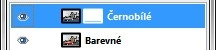

Web je již jen v režimu pro čtení a není možné přidávat nové komentáře nebo dotazy do fóra. Díky za přízeň.
Main menu
You are here
Práce s maskami - částečné odbarvení fotografie
26. December 2009 - 12:00 — Lukáš
Tento článek je určen začátečníkům a lidem, kteří nevědí jak s vrstvami pracovat
- Odsud si stáhneme obrázek který si otevřeme v Gimpu
- Duplikujeme jej a vrchní vrstvu odbarvíme pomocí Barva → Odbarvit
- Černobílé vrstvě přidáme masku - Bílá úplné krytí (klepneme pravým tlačítkem myši na vrstvu a zvolíme přidat masku)
 - Zvolíme si vhodnou stopu štětce, nastavíme barvu popředí načernou a auto vybarvíme
- Hotovo :)
{kind=link}
{kind=link}
{kind=link}
Zdroj: http://puteraaladin.blogspot.com/2008/08/tutorial-layer-mask-in-gimp-for.html
Aktualizováno
Jako odpověď na Vaše stížnosti jsem Vám natočil video, podle kterého návod snad pochopíte :)
Těším se na další komentáře :)
Kategorie:
Web je již ukončen. Nebude zde přibývat žádný nový obsah. Případné dotazy prosím na l.bacovsky(a)outlook.cz
Comments
tohle fakt
ahoj, co přesně vám nejde?
Re: tohle fakt
Zdarec. Mám s tím menší
Máte nastavenou špatnou barvu
Re: Zdarec. Mám s tím menší
pro Tohle fakt i ostatní
Ale vždyť v návodu v kroku
absolutně to nejde...!!!
Blbě :)
to je vysvětlení pojď
Takže lidi, už jsem to našel
Podívejte se na přiložené
Re: Takže lidi, už jsem to našel
Je to naprosto....
je to úplně bezva, dloho jsem
Ježíš to je neskutečný...
No já bych ty lidi hňupy
ahoj, možná budu vypadat
Re: Práce s maskami (aktualizováno)
Re: Práce s maskami - částečné odbarvení fotografie
Re: Práce s maskami - částečné odbarvení fotografie
Re: Práce s maskami - částečné odbarvení fotografie
Re: Práce s maskami - částečné odbarvení fotografie
Re: Práce s maskami - částečné odbarvení fotografie
Re: Práce s maskami - částečné odbarvení fotografie
Re: Práce s maskami - částečné odbarvení fotografie
Re: Práce s maskami - částečné odbarvení fotografie
Re: Práce s maskami - částečné odbarvení fotografie
Re: Práce s maskami - částečné odbarvení fotografie
Re: Práce s maskami - částečné odbarvení fotografie
Re: Práce s maskami - částečné odbarvení fotografie
Re: Práce s maskami - částečné odbarvení fotografie
Re: Práce s maskami - částečné odbarvení fotografie
Re: Práce s maskami - částečné odbarvení fotografie
POMOC
Re: POMOC
Re: Práce s maskami - částečné odbarvení fotografie
pomoc
Re: pomoc
Re: Práce s maskami - částečné odbarvení fotografie
Re: Práce s maskami - částečné odbarvení fotografie
Re: Práce s maskami - částečné odbarvení fotografie
Re: Práce s maskami - částečné odbarvení fotografie
Re: Práce s maskami - částečné odbarvení fotografie
Re: Práce s maskami - částečné odbarvení fotografie
Re: Práce s maskami - částečné odbarvení fotografie
Re: Práce s maskami - částečné odbarvení fotografie
Re: Práce s maskami - částečné odbarvení fotografie
Re: Práce s maskami - částečné odbarvení fotografie
Pages
Add new comment